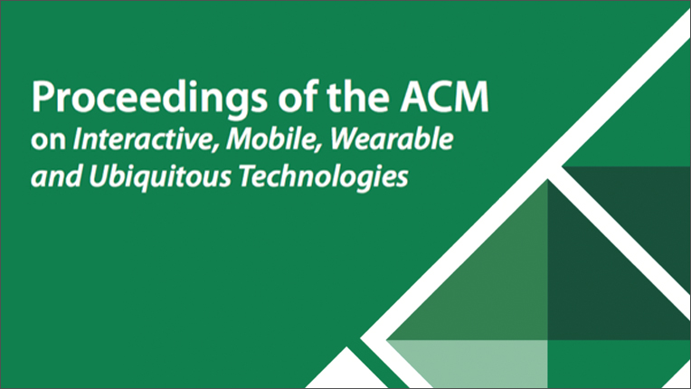

Guiding Blind Pedestrians in Public Spaces by Understanding Walking Behavior of Nearby Pedestrians
Main Video
Abstract
We present a guiding system to help blind people walk in public spaces while making their walking seamless with nearby pedestrians. Blind users carry a rolling suitcase-shaped system that has two RGBD Cameras, an inertial measurement unit (IMU) sensor, and light detection and ranging (LiDAR) sensor. The system senses the behavior of surrounding pedestrians, predicts risks of collisions, and alerts users to help them avoid collisions. It has two modes: the "on-path" mode that helps users avoid collisions without changing their path by adapting their walking speed; and the "off-path" mode that navigates an alternative path to go around pedestrians standing in the way. Auditory and tactile modalities have been commonly used for non-visual navigation systems, so we implemented two interfaces to evaluate the effectiveness of each modality for collision avoidance. A user study with 14 blind participants in public spaces revealed that participants could successfully avoid collisions with both modalities. We detail the characteristics of each modality.
Publications
Seita Kayukawa, Tatsuya Ishihara, Hironobu Takagi, Shigeo Morishima, and Chieko Asakawa.
2020.
Guiding Blind Pedestrians in Public Spaces by Understanding Walking Behavior of Nearby Pedestrians.
Proceedings of the ACM on Interactive, Mobile, Wearable and Ubiquitous Technologies (IMWUT), 4, 3, Article 85 (September 2020), 22 pages.
粥川青汰, 石原辰也, 髙木啓伸, 森島繁生, 浅川智恵子.
歩行者の動きの解析と衝突予測に基づく公共空間における視覚障害者向け歩行支援システム.
インタラクション.
2020. (査読あり, 口頭発表)
Authors
Waseda Research Institute for Science and Engineering
IBM Research
Related Project
Media